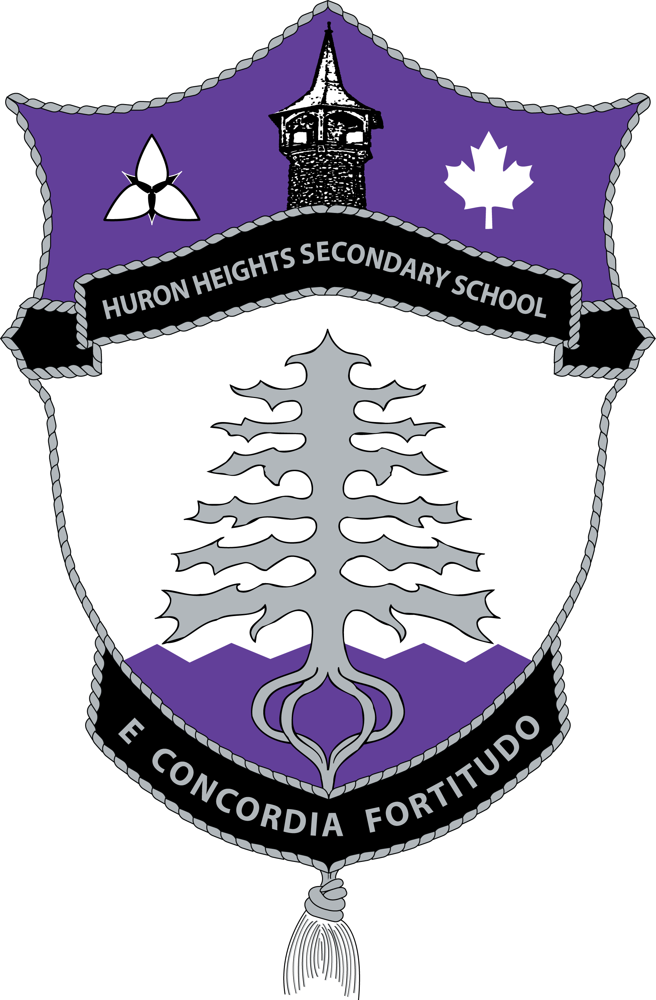

Science Department Work Expectations | Homepage
|
Science Department Late Policy | |
|  | Welcome to Grade 9 ScienceTeacher: Mr White Office Hours - Period 2 and 3 in room 2008 MSIP Period - Period 5 in room 2402 | ||
| INTRO TO SCIENCE | Junior Lab Report format | ||
| Chemistry | Ecology | Electricity | Astronomy |
| Febuary | March | April | May | June |
Section |
Main Topics |
| INTRODUCTION TO SCIENCE |
Safety, Math Skills and the components of the Scientific Method |
| Unit 1: Chemistry |
particle theory, classify matter, chemical vs physical, periodic table, atomic theory |
| Unit 2: Electricity | static charge, models
and applications of static charge, current, circuit diagrams,
mathematical analysis of circuits, power and household electricity |
| Unit 3: Ecology | Analysis of Ecosystems, Nutrient Cycles, Sustainability, Human Impact |
| Unit 4: Space | Celestial objects, Big Bang, Space travel |
| End of Year Assessment: | |
| Lab Test - Possible | |
|
Final Exam - Definitely |
| Textbook Safety section | Textbook Skills section | Textbook Glossary |
| Safety - GHS - symbols | The Scientific Method | Math in Science |
| WHMIS, HHPS - chemistry unit | Hypothesis | Conversions |
| MSDS, SDS - chemistry unit | Variables | Graphing |
| Lab Equipment - chemistry unit | Qualitative, Quantitative | Scientific Notation |
| Lab Report |
| Feb 4-8 | Welcome to Science -resources available -course outline | Science and the Scientific Method -hypothesis -variables -Quizlet - Scientific method 1di | Science and the Scientific Method - worksheet discussion -Quizlet - Scientific method 1di | -Design own experiment -HHSS lab report - Research about your favourite animal / plant - Using the research tool in Google Docs | Discussing good cause and effect questions Graphing using Google Sheets Working on Designing your own experiment |
| Feb 11-15 | Discussing good questions Math Skills -Scientific Notation | Discussing good graphs Math Skills -Calculations involving Scientific Notation -math games | Math Skills -Conversions -metric conversions calculator | START ELECTRICITY |
| Chapter 4 MATTER | Chapter 5 PERIODIC TABLE | Chapter 6 COMPOUNDS |
| Matter | The atom | Why do they form? |
| Particle Theory, Changes of State | Atomic Theory | Types of compounds |
| Classifying Matter | Types of Elements, Symbols | Forming simple ionic |
| Physical vs Chemical Change | Periodic Table - Atomic Number, Mass, Groups | Forming simple molecular |
| Identifying Gases | Bohr, Bohr-Rutherford Diagrams |
AGENDA | TEXTBOOK REFERENCE | UNIT REVIEW |
| March 22-23 | Finishing the Electricity Unit test Safety in Science Class - Textbook pages xxvi-xxix -Quizlet - WHMIS Symbols, Lab equipment -WHMIS symbols 2015 -WHMIS quiz (past symbols) | Safety in Science Class -WHMIS symbols 2015 -WHMIS quiz (past symbols) -MSDS / SDS | |||
| 26-29 | Define Matter Mass, Volume, Density States of matter Density questions for homework page 138-140 Crash Course Kids | Particle theory Types of particles Change of state Video page 138-140 Heating Curve of Water Heating Curve with labels | Classifying Matter - matter flowchart Properties of matter - physical properties - chemical properties page 150-153 | Properties of matter and Density Lab | EASTER GOOD FRIDAY |
| April 3-6 | EASTER MONDAY | Electricity test discussion | Density Lab Concerns? Density Lab discussion | Matter Review Changes of State Water Heating Curve Temperature = Motion Classifying Matter Flowchart | Physical Properties Physical Change (state change, dissolving) Chemical Change (cooking, rusting, burning, reacting, oxidizing) Evidence of a chemical Change Gas Reactions VIDEO - review Chapter 4 review |
| April 9-13 | Finish up physical and chemical change few more demos | LITERACY TEST DAY | How big is an atom Begin Atomic Theory Chapter 5.1 Researching Names, experiments and changes to the atomic model | Complete Atomic Theory Crash Course Video review chapter 4 questions | PD DAY [Video on discovering what matter is made of ] PBS: The mystery of matter |
| 16-20 | SNOW DAY | Chapter 4 quiz Atomic theory Review Chadwick, Bohr, Quantum Types of Elements Metals vs Nonmetals vs Metalloids page 182 elements to know, Quizlet (The periodic table of elements -50 elements) | Patterns of how element names and symbols originated Parts of the Periodic Table -Periods, Group or Families -alkali metals, alkaline earth metals, halogens, noble gases -the staircase -transition metals | Numbers of the periodic table Atomic number Atomic mass (relative) Bohr Rutherford Model of the Atom -protons -neutrons -electrons - special rules | Drawing Bohr Rutherford Models period number = energy levels = electron shells group number = outer electrons = valence electrons |
| April 23-27 | \FIELD |TRIP or Quizlet - Hunting the Elements PBS - Hunting the elements | FIELD |TRIP or Quizlet - Hunting the Elements PBS - Hunting the elements | Quizlet - Hunting the Elements - Complete the Video PBS - Hunting the elements | Trends in the Periodic Table Valence electrons Quiz on elements and their symbols | -Review of ch 4 quiz -collecting video sheet -reviewing Bohr rutherford model -looking at trends in the first 20 elements |
| April 30 -May 3 | Forming Ions making ionic compounds Full Valence shell losing and gaining electrons Ionic Compounds properties of ionic compounds | Lewis Model (Electron Dot diagram) Charges on the periodic table Ionic versus Molecular | Review checklist | PD DAY | |
| May 7-11 | Review Period | Chemistry Unit Test |
Visualization and Problem Solving for General Chemistry states of matter, elements, compounds, mixtures, solutions, and other visual models
Element Name Origins history of the names, and general help on the periodic table
Periodic Table at Chemicalelements.com is an excellent site for this assignment - the "Basic Information" section will help you with the first four items in your task
Periodic Table from the University of Sheffield is excellent
Ecology is a unit on opinion development. Various topics are studied in order to make informed statements about a sustainable future. An enjoyable unit for most students but the amount of terms in this unit can be overwhelming.
Chapter 1 ECOSYSTEMS | Chapter 2 HUMAN ACTIVITY | Chapter 3 SUSTAINABILITY |
| 1.1 ECOSYSTEMS | 2.1 HUMAN USE | 3.1 GOVERNMENT ACTION |
1.2 NUTRIENT CYCLES | 2.2 ASSESSING IMPACT | 3.2 STEWARDSHIP |
1.3 INTERACTIONS |
AGENDA | TEXTBOOK REFERENCE | UNIT REVIEW |
| May 9-11 | Intro to Sustainable Ecosystems How Wolves change Rivers Section 1.1 - Ecology Terms Strange Days - Wolves in Yellowstone Crash Course Ecology | Keystone Species Discussion of Section 1.1 Importance of biodiversity How Whales Change Climate | Section 1.2 Nutrient Cycles Biochemical Cycles - Crash Nitrogen and Phosphorus | ||
| 14-18 | Nutrient Cycles - review LOOPS in Ecosystems Positive vs negative feedback loops Chem unit test returned Trees talk to each other - 56 min | Section 1.2 Chains, Webs, Pyramids -comparing the three models (benefits and drawbacks) Brown Food Chain Rewilding our ecosystems - TED | Section 1.3 Biotic Interactions BBC relationships 15 cool symbiotic relationships More on Symbiotic relationships | (not going to watch in class) Population Dynamics - lots of info (moves slow) Section 1.3 Population Characteristics Why are there so many insects? - TED Carrying capacity - sturgeon Wolf and Moose relationship | Human Activity affects sustainability Jellyfish Rule - Nature of things |
| 22-25 | VICTORIA DAY | Section 2.1 Human Impacts Invasive species - TED Rabbit Island - Japan | Section 2.2 Assessment of Human Impact Care about the ocean? How to care for our ocean Ocean Plastic Island | Section 2.2 Assessment of human impact continued Epic Speech - Save the World | Chapter 1 terms Test Chapter 2 Review |
| 28-1 | Discussion of Assessing ecosystem impacts | Return Ch 1 terms test Do we still need pesticides - TED Section 3.1 - Government Action Where are all the honey bees -TED | Wildfires are necessary - TED Section 3.2 Environmental Stewardship | OWL PELLET DISSECTION - forms and images on Google classroom | TED Talk - Route for Sustainable future Working together to promote sustainability ECOLOGICAL FOOTPRINT Review -Terms and videos |
| June 4-8 | Lesson Discussion Stewardship | Chapter 2 and 3 Test |
Environmental literacy Everyone needs an informed opinion. It also provides additional help towards ecology topics.
At BioInteractive, you can find award-winning multimedia resources, including apps, animations, videos, interactives, and virtual labs, to bring the excitement of scientific discovery into your classroom
Videos for teaching ecology
CK-12.org : Middle School Ecology Section
CK-12.org : Grade 9/10 Ecology Section
| Chapter 10 STATIC | Chapter 11 CURRENT | Chapter 12 RENEWABLE |
| Define static charge, Law of Attraction, Repulsion | Define Current, DC vs AC | Renwable vs NonRenewable |
| Friction and electrostatic series (electron affinity), Insulator, Conductor | Terms of electrical devices | Generating Electricity |
| Ways of creating static charge | Voltage, Current, Resistence | Cost of Electricity (Energy, Power, Efficiency) |
| Applications of Static Charge | Circuits, Simple, Parallel, Series | |
| Calculations V, I, R |
AGENDA | TEXTBOOK REFERENCE | UNIT REVIEW |
| Febuary 15, 16 | Electricity: Static vs Current Matter, the Atom and Charges Insulators and Conductors What is Static electricity - TED - video Digging Deeper - TED Lesson History of positive and negative | Methods of Creating a Static Charge Contact Friction Induction | |||
| Febuary 20 - 23 | Family Day | Worksheet Review of math, static charge Research of applications of static charge -negative / safety -positive / using static charge | Check work Quiz on math on Friday Discuss worksheet Electroscopes -charging by contact -charging by friction -charging by induction Complete worksheet on applications of static electricity | Complete worksheet on applications of static electricity Current Electricity - define Parts fo a simple circuit Terms: Source, Load, open, closed, negative and positive signs on batteries | Quiz on math skills Souces of electricity: electrolyte, electrode, wet cell, dry cell, fuel cell |
| Febuary 26 to March 2 | Sources of electricity - discuss worksheet Measuring current I=Q/t worksheet Charge and Electrons 1 Coulomb = 6.24 x1018 electrons | Handback Scientific Notation and Conversions quiz solutions to quiz Solutions to measuring current Simple circuit and symbols - Voltage - cell - energy added - Resistance - load - energy removed - Current - wires - number of electrons | Drawing Circuits - Parallel vs Series - Analysing circuits - Effects on Voltage, Loads, Current | Animation Model of electric circuits - website to see circuits and measure volts, amps, ohms Ohm's Law R = V/I V = IR I = V/R Calculations | Circuit analysis and Ohm's Law example circuits and a worksheet |
| March 5 to March 9 | Take up worksheet on circuit analysis homework - read section 12.1, terms, generating electricity, generating electricity by heat | INTERIM REPORT DAY Generating Electricity solar, wind, tidal Advantages and disadvantages of renewable and nonrenewable resources | Electricity in the home - Power, Energy, watt, joules kilowatt hours | Energy in the home How did the worksheet go?? Joules vs kilowatt hours!! -both are ways of describing the amount of energy used by loads | Home Electricity question sheet (AC vs DC, Fuse, Short Circuit, efficiency) Review topics |
| March 12 to March 16 | MARCH BREAK | ||||
| March 19 to March 23 | review static electricity circuit diagrams | calculations | Unit test on static and current electricity | ||
| Chapter 7 BIG BANG | Chapter 8 SOLAR SYSTEM | Chapter 9 SPACE EXPLORATION |
| Sun to Edge of Space | Stars, Life of Stars | History: Geocentric vs Heliocentric |
| Big Bang Theory | The Sun | Telescopes and technology |
| Spectroscope and Redshifting | The Solar System | Space Travel |
| Earth, Sun, Moon |
AGENDA | TEXTBOOK REFERENCE | UNIT REVIEW |
| June 4-8 | Ecology Test Ch2+3 TED Talks on Astronomy Begin Terms of Unit Section 7.1 If the moon was only one pixel in size - Solar system trip | Universe, Astronomy, Astrology, Cosmology Space is empty Distances are large Celestial objects Terms on google classroom | Our Solar System
| Stars and Galaxies solar nebula theory Hawkins - solar nebula theory Notes solar nebula theory Life of a star - depends on mass
| |
| June 11-15 | Ontario Science center Star charts Constellations Star Charts | Hertzsprung-Russell Diagram Galaxies
Big Bang Theory Expanding Redshifting Spectral Lines | Local Space information
| Life in space pg 366-370 | SPACE TEST |
| Careers and Technology in the SCIENCE Field: Poster Project: | Most information can be found through search engines like Google. |
| Reasearch on your favourite element and storybook | Although I have yet to attach the assignment to the website using your handout in class should provide sufficient infarmation about this project. You will find it useful to consult more than one periodic table. The various sites provide different amounts of information. |
|
* Periodic Table at Chemicalelements.com is an excellent site for this assignment - the "Basic Information" section will help you with the first four items in your task * Periodic Table from the University of Sheffield is excellent For other information go to
the PHS Library Homepage
then go to Select a Database then pick InfoTrac then select Discovering
Collection. Type in your element name in the search bar and click
Search. | |
| SPACE PROJECT |
Internet Scavenger Hunt in space |
| ELECTRICITY PROJECT |
{kind=link}
{kind=link}
{kind=link}